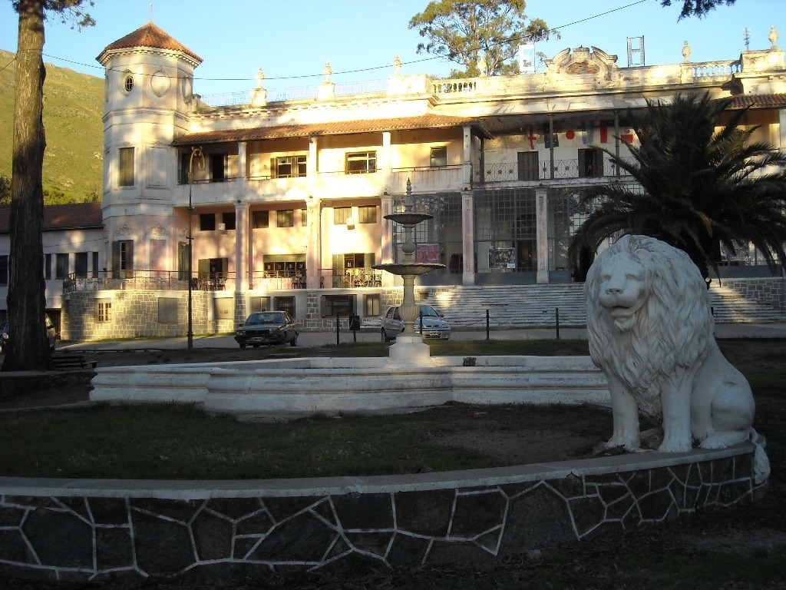
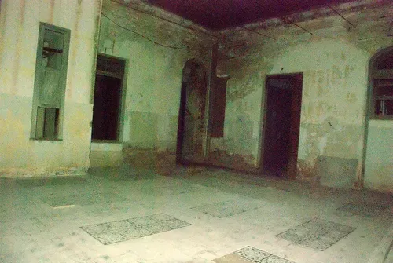
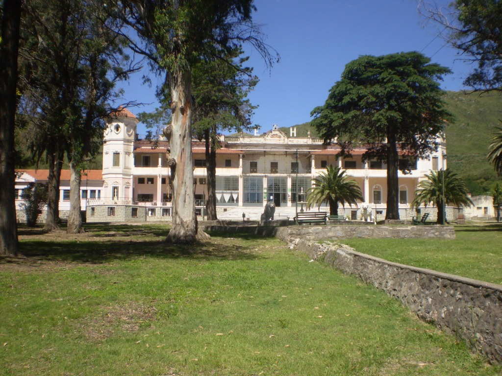
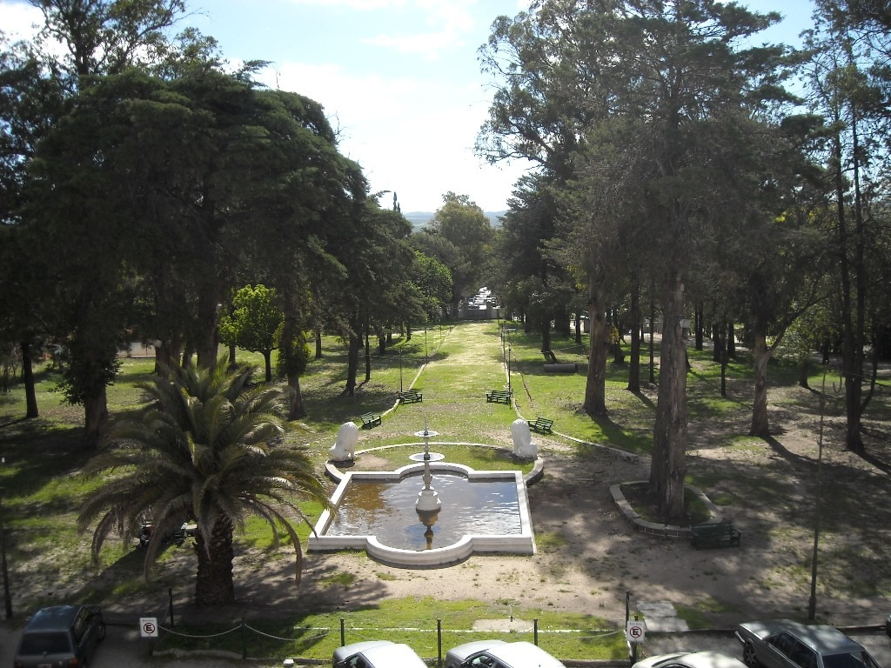
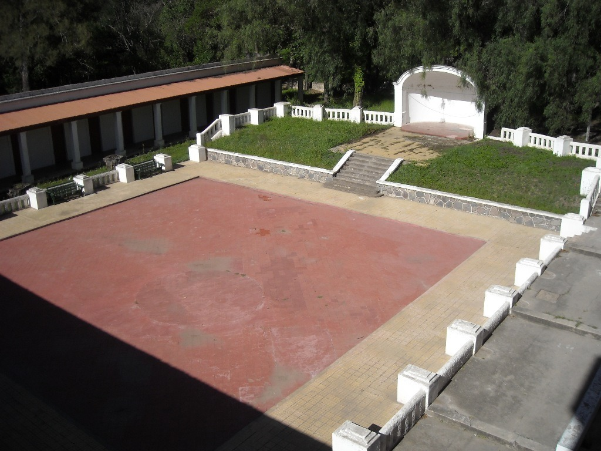

(Eden sin tilde, tal como fue bautizado en sus documentos originales de 1898)
Cuna de la aristocracia internacional, refugio de presidentes, nobles y leyendas. El majestuoso palacio que dio origen y vida a la ciudad de La Falda en el corazón de las sierras de Córdoba.
Más que un hospedaje, el Eden Hotel fue el núcleo civilizador que transformó un paraje agreste al pie del cerro El Cuadrado en la prestigiosa ciudad de La Falda.

Fachada imperial al atardecer: fuente de mármol y leones custodios traídos de Europa.
El 19 de agosto de 1897, Roberto Bahlcke —exoficial del ejército alemán radicado en Córdoba desde 1890— adquirió la Estancia La Falda de La Higuera, compuesta por 900 hectáreas en lo que entonces era Huerta Grande.
Para hacer realidad un hotel de lujo sin precedentes, Bahlcke se asoció con Juan Kurth (cónsul de Suiza y fundador de la Bolsa de Comercio de Córdoba) y la empresaria alemana María Herbert de Kreautner, contando con un cuantioso crédito concedido por Ernesto Tornquist, célebre banquero y dueño de la Refinería Argentina de Azúcar en Rosario.
En 1912, la administradora María Herbert vendió la propiedad a los hermanos Walter y Bruno Eichhorn por m$n 450.000. Para cancelar las deudas hipotecarias, dos años después los hermanos resolvieron lotear la estancia: ese histórico fraccionamiento de tierras marcó el nacimiento oficial del pueblo y futura ciudad de La Falda.
Roberto Bahlcke, Juan Kurth y María Herbert de Kreautner adquieren 900 hectáreas e inician la faraónica construcción con crédito de Ernesto Tornquist.
En enero arriban los primeros pasajeros aristocráticos, deslumbrados por el clima serrano y el confort importado del viejo continente.
La sociedad se disuelve y María Herbert toma el control absoluto, realizando giras de promoción por toda Europa que colman las temporadas de invierno y verano.
Walter y Bruno Eichhorn compran el hotel. El loteo de tierras para solventar compromisos financieros da inicio formal a la localidad de La Falda.
Cuando Argentina declara la guerra a las potencias del Eje, el Estado confisca el hotel y lo utiliza como centro de reclusión de lujo para diplomáticos japoneses.
Devuelto bajo el mandato de Perón, pasa a manos de la firma Tres K (vinculada a Juan Duarte). Tras deudas y remates, la temporada de 1965 sella el cierre definitivo de sus puertas.
Declarado Monumento Histórico Municipal en 1988 y comprado por el Municipio de La Falda en 1998, devolviendo su esplendor al turismo nacional e internacional.
Concebido como un santuario de descanso y sanación para la élite mundial. Su aire puro serrano era recomendado contra la tuberculosis, mientras los viajeros del hemisferio norte escapaban al crudo invierno boreal.
Originalmente dotado de dos plantas, 100 aposentos y 4 baños, fue ampliado luego a 38 baños completos, dos jardines de invierno, sala de lectura, bar selecto, galería techada y majestuosos balcones con vista panorámica.
Inmenso salón comedor principal con capacidad para 250 personas, sumado a un comedor auxiliar exclusivo para infantes y personal de servicio doméstico con riguroso protocolo de atención.
Mobiliario exclusivo, vajilla de porcelana, cristalería de Murano, platería fina, alfombras persas, pianos de cola, esculturas y pinturas europeas que respondían a la vanguardia artística de principios del siglo XX.
Funcionaba con la independencia de las grandes estancias: usina eléctrica propia pionera en la región, calefacción centralizada a vapor, talleres mecánicos, quinta de frutas y corrales para abastecimiento directo de alimentos frescos.
Campo de golf reglamentario de 18 hoyos, pileta de natación olímpica provista por vertientes naturales puras de montaña, canchas de tenis de polvo de ladrillo y dependencia bancaria propia en sus galerías.
Caballos de pura raza criados en sus establos para cabalgatas por las quebradas y tradicionales cacerías del zorro al más estricto estilo señorial británico.
Todas las noches de la temporada se celebraban recepciones y bailes de frac y traje de gala. En las mesas se descorchaban selectos vinos del Rin combinados con agua pura de vertientes serranas.
Un parque monumental forestado con miles de ejemplares arbóreos traídos en barco desde Europa, centrado por una fuente de mármol de Carrara escoltada por dos imponentes leones esculpidos.
Reyes, jefes de estado, genios de la ciencia y poetas inmortales caminaron por las galerías del Eden Hotel.
Huésped predilecto durante sus períodos de descanso, disfrutando del retiro serrano y las cabalgatas.
Frecuente habitante de las suites de honor durante su mandato presidencial a principios del siglo XX.
Encuentros diplomáticos y temporadas estivales en las instalaciones exclusivas del Eden.
Buscó en el microclima de La Falda alivio para su delicada salud durante su presidencia.
Príncipe de Gales (luego Rey Eduardo VIII del Reino Unido), alojado durante su trascendente gira por Argentina.
Duque de Saboya y último rey de Italia, quien disfrutó de la gastronomía y los bailes de salón.
El padre del Modernismo literario encontró inspiración poética en la serenidad de sus jardines y pinares.
El mítico director de orquesta italiano, figura sublime en los pianos de concierto del hotel.
Aclamada recitadora y actriz dramática que deleitó a los concurrentes de la alta sociedad.
Mencionado entre las personalidades insignes que recorrieron con admiración sus instalaciones.
Visitó el hotel durante sus travesías de juventud por el Valle de Punilla, atraído por el clima beneficioso para el asma.
En 1925, durante su histórica visita a la Argentina, el Premio Nobel de Física Albert Einstein fue agasajado en las escalinatas principales del Hotel Edén con un fastuoso banquete ofrecido en su honor por las máximas autoridades de la Facultad de Derecho y Ciencias Sociales de la Universidad Nacional de Córdoba.
Documentación oficial de inteligencia norteamericana sobre Walter e Ida Eichhorn
El 17 de septiembre de 1945, el director del FBI John Edgar Hoover suscribió un reporte confidencial proveniente de la Office of Strategic Services (OSS) que investigó en detalle las actividades del matrimonio Eichhorn:
En 1925 los dueños recibieron el ejemplar número 110 de la edición de lujo numerada de Mein Kampf (solo 500 copias para los colaboradores más íntimos).
Según testimonios del historiador Carlos Panozzo, "los discursos y arengas de Hitler eran captados por una potente antena de onda corta en el techo del Edén y retransmitidos al pueblo mediante altoparlantes".
Cartas conservadas en archivos históricos que testimonian el estrecho vínculo económico y personal:
"Querido señor Eichhorn: muchísimas gracias por la carta enviada por usted y su querida esposa, junto con el preparado de ozono que probaré de inmediato... Cariñosos saludos, Adolf Hitler."
"Querido señor Eichhorn: gracias por sus felicitaciones por mi elección como canciller. Los viejos amigos son los responsables como yo de esta victoria. Con saludo alemán, Adolf Hitler."
"Querido camarada Eichhorn: usted junto con su esposa ha apoyado al movimiento con enorme espíritu de sacrificio... fue su ayuda económica la que me permitió seguir guiando la organización." — Diploma manuscrito de condecoración.
Investigaciones históricas señalan que figuras jerárquicas como Adolf Eichmann y Josef Schwammberger pasaron por las inmediaciones, mientras más de 1.200 ciudadanos alemanes se radicaron en La Falda en los años finales de la Segunda Guerra.
Una visita guiada de carácter esotérico y místico en oscuridad total, con la única iluminación proporcionada por la linterna del guía.

El circuito inicia con la proyección de un documental sobre fenómenos paranormales y leyendas urbanas del hotel. A continuación, el grupo se adentra en completa oscuridad por las antiguas habitaciones y salones desiertos donde se narran escalofriantes historias de apariciones, entre ellas la célebre "Dama de Blanco" y la sobrecogedora leyenda de la "niña fantasma".
La experiencia se lleva a cabo únicamente los días viernes y sábados en dos turnos: a las 21:00 hs y a las 23:00 hs. Los cupos son estrictamente limitados para conservar la atmósfera y requieren reserva previa obligatoria.
Por razones de seguridad e intensidad emocional, la actividad está estrictamente prohibida para menores de 7 años. El recorrido tiene una duración aproximada de 2 horas.
Entrada general: $4.000 (tarifa de referencia actualizada a 2024; se sugiere consultar tarifas vigentes al momento de reservar por posibles actualizaciones).
Cupos limitados por función · Viernes y Sábados 21:00 y 23:00 hs
Explora los rincones emblemáticos, la imponente arquitectura centenaria y los salones donde el tiempo se detuvo.



Encuentra cómo llegar al Eden Hotel en las sierras cordobesas y contáctate directamente para visitas y reservas.
31°05′30″S 64°28′02″O
Al pie del cerro El Cuadrado, Punilla03548-426643
* En PC abrirá WhatsApp Web o copiará el número; en móvil te conectará por WhatsApp o abrirá tu marcador telefónico.
https://edenhotellafalda.com.ar/
Propiedad de la Municipalidad de La FaldaVisita guiada en oscuridad total · Prohibido menores de 7 años.